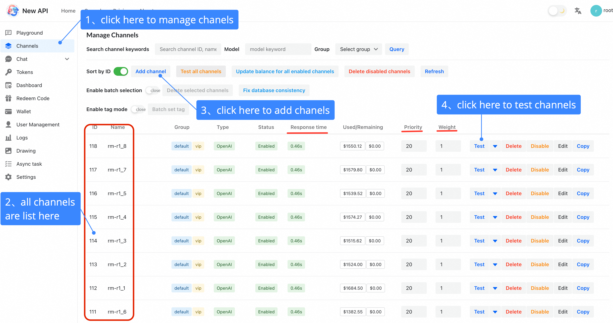
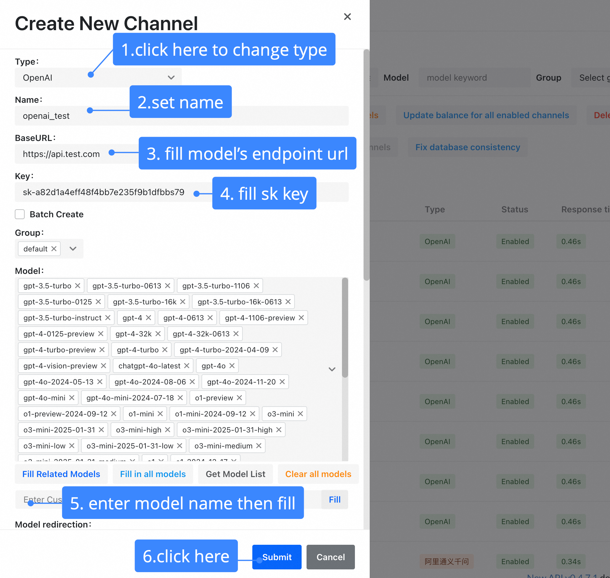
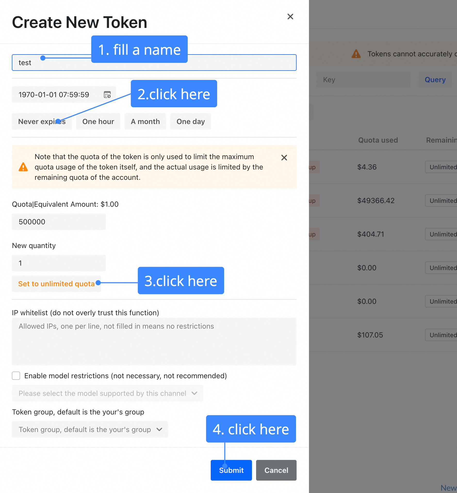
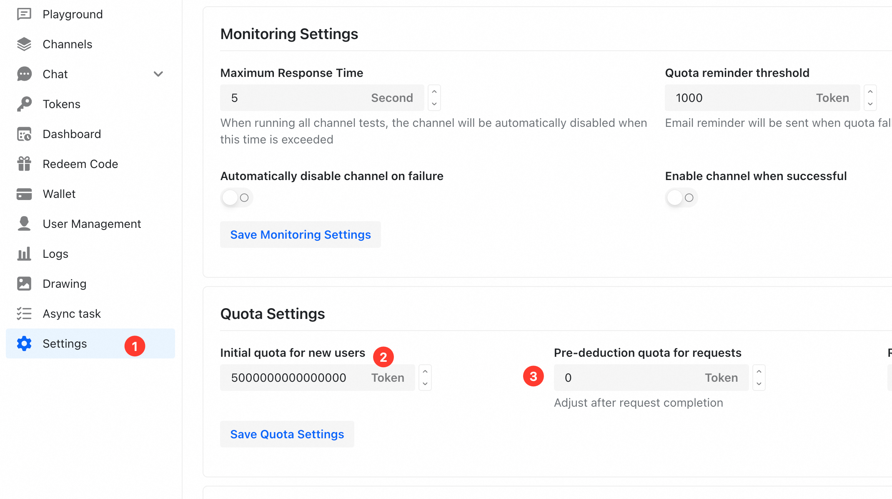
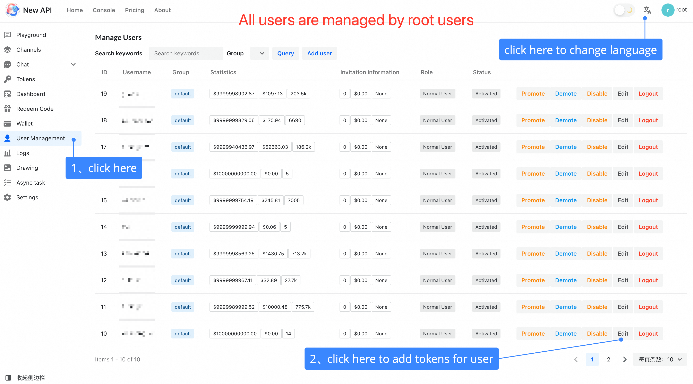
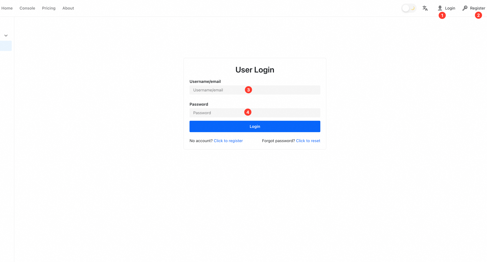

Deploying a High-Performance RM Serving Platform with New API
This tutorial will guide you through deploying New API as a high-performance serving gateway for your Reward Models (RMs) created with RM-Gallery.
1. Why Use new-api for RM Serving?
In a production environment, simply running a reward model as a script is not enough. You need a robust system to manage, scale, and monitor it. new-api provides a powerful solution, acting as a unified gateway for all your AI models, including the RMs you've built. By deploying your RMs behind new-api, you gain several key advantages:
1.1. Unified Management and Standardized Access
Real-world applications often require multiple reward models for different tasks (e.g., a math-specific RM, a coding RM, and a general helpfulness RM). new-api allows you to consolidate all these models under a single platform.
- Centralized Control Panel: Manage all your models, whether they are hosted locally, on different cloud servers, or from various providers, through one intuitive web interface.
- Standardized API: It provides an OpenAI-compatible API format. This means you can interact with any of your reward models using the same familiar request/response structure, dramatically simplifying integration with other applications.
1.2. High Performance, Scalability, and Reliability
new-api is designed for high-throughput scenarios, ensuring your reward model service remains responsive and available even under heavy load.
- Load Balancing: Distribute incoming requests across multiple instances of your reward model. If you have several servers running the same RM,
new-apican balance the traffic between them, preventing any single instance from being overloaded. - Channel Weighting & Retries: You can set priorities or weights for different model channels and configure automatic retries. If one model endpoint fails,
new-apican automatically reroute the request to a backup, ensuring high availability.
1.3. Multi-User Support and Granular Access Control
When your reward model is used by different teams, applications, or end-users, you need a secure way to manage access.
- API Key Management: Generate unique API keys (tokens) for each user or application. This allows you to track usage and control access granularly.
- Quota and Rate Limiting: Prevent abuse and manage costs by setting usage quotas (e.g., number of requests or token count) and rate limits for each API key.
- Model Permissions: Restrict which models a specific API key can access. For example, you can grant one team access to only the coding RM, while another gets access to all models.
1.4. Cost-Effectiveness and Monitoring
- Built-in Caching:
new-apican cache responses to identical requests. If the same input is sent to your reward model multiple times, the cached result is returned instantly, saving computation time and cost. - Usage Dashboard: The platform provides a clear dashboard to monitor usage statistics, helping you understand which models are being used most frequently and by whom.
By leveraging these features, new-api transforms your reward models from standalone components into a production-ready, scalable, and manageable service. The rest of this tutorial will show you how to set it up.
2. Prerequisites
Before you start, make sure you have the following tools installed on your system:
- Docker: To run the
new-apicontainer. Install Docker. - Docker Compose: To easily manage the Docker container configuration. Install Docker Compose.
You should also have a reward model from the RM-Gallery that is running and accessible via an HTTP endpoint (e.g., http://localhost:8000).
3. Step-by-Step Deployment
We will use Docker Compose to deploy new-api. This is the recommended approach for a clean and manageable setup.
3.1. Create a docker-compose.yml File
Create a new directory for your new-api instance and create a file named docker-compose.yml inside it.
mkdir my-rm-gateway
cd my-rm-gateway
You can use the example docker-compose.yml we have provided. You can either download it or copy its contents into the file you just created.
File: docker-compose.yml
version: '3.9'
services:
new-api:
image: calciumion/new-api:latest
container_name: rm_gallery_new_api
ports:
- "3000:3000"
volumes:
- ./data:/data # Persists data in a local 'data' directory
restart: always
environment:
- TZ=Asia/Shanghai
3.2. Launch new-api
With the docker-compose.yml file in your current directory, run the following command to download the new-api image and start the service in the background:
docker-compose up -d
Docker will now pull the latest new-api image and start the container. You can check if the container is running with:
docker-compose ps
You should see an output indicating that the rm_gallery_new_api service is "Up".
3.3. Access the Web UI
Once the service is running, you can access the new-api web interface by navigating your browser to:
You should be greeted with the new-api login page.
4. Configuring new-api for Your Reward Model
Now that the gateway is running, let's configure it to route requests to your reward model.
4.1. Initial Setup: Create an Administrator Account
The first time you visit the UI, you'll need to create an administrator account.
- Click on
Go to register. - Fill in the registration form. The first user to register automatically receives administrator privileges.
- Once registered, log in with your new credentials.
You will also be given a default token with 500,000 credits. We will create a new, specific token for our RM later.
4.2. Configure Your Reward Model Channel
In new-api, a "Channel" represents a connection to a model endpoint. The Channels page is your central hub for managing all your models.

From this page, you can: - View all your configured channels and see their status. - Test a channel to ensure it's working correctly. - Use Priority for failover (higher numbers are tried first) and Weight for load balancing (requests are distributed based on weight for channels with the same priority). - And most importantly, Add a new channel.
Now, let's add your reward model. Click the Add channel button to open the "Create New Channel" dialog.

Here is how you fill out the form to add your custom reward model, following the numbered steps in the image:
- Type: This setting determines the API format
new-apiuses to communicate with your model. For the best compatibility and to leverage the platform's full feature set, we strongly recommend exposing your reward model with an OpenAI-compatible API.- If your model's API is OpenAI-compatible, select
OpenAI.new-apiwill then communicate with your model using the standard OpenAI format. - If you are using a truly non-standard API format, you can select
Customas a fallback. - For this tutorial, we will select
OpenAI, assuming your RM server is compatible.
- If your model's API is OpenAI-compatible, select
- Name: Give your channel a descriptive name, such as
math-rm-v1. - Base URL: Enter the base URL of your model's API service. This can be a local address or a public endpoint on another server.
- For models on another server: If your model is hosted on a different machine, use its public IP address or domain name (e.g.,
https://my-rm-service.com). - For local models: If your model is running on the same machine as the Docker container, use the special DNS name
host.docker.internalto allow the container to access it. For example:http://host.docker.internal:8000. - Note: Since we selected
OpenAIas the type, you only need to provide the base path.new-apiwill automatically append the correct endpoint path (e.g.,/v1/chat/completions).
- For models on another server: If your model is hosted on a different machine, use its public IP address or domain name (e.g.,
- Key: This field is for an authentication token. If your custom model endpoint requires an API key or a Bearer token to be sent in the
Authorizationheader, enter it here. Otherwise, you can leave this blank. - Models: Enter the model names that will be served through this channel (e.g.,
rm/math-rm-v1). This is the name you will use in your API requests. You can add multiple model names here. - Submit: Click Submit to save the channel.
4.3. Create a Token (API Key)
A "Token" is an API key that applications use to authenticate with new-api. Let's create a token to use for testing.
First, navigate to the Tokens page from the sidebar and click Add New Token.

Follow these steps to configure the token:
- Name: Give your token a descriptive name, like
my-app-key. - Expiration: Set an expiration date for the token. For this tutorial, you can select
Never expires. - Quota: Set the credit limit for this token. Click Set to unlimited quota for this tutorial.
- Model Restrictions: This setting allows you to limit which models the token can access. As noted in the UI, this is often not necessary, so we will leave it disabled for this tutorial.
- Submit: Click Submit to create the key.
After creation, a new token will appear in the list. Click the Copy button to copy the API key (it will start with sk-...). Store this key securely, as you will not be able to see it again.
5. Testing Your Deployment
With everything configured, you can now make API requests to your reward model through the new-api gateway. The gateway exposes an OpenAI-compatible API endpoint.
Replace YOUR_API_KEY with the token you just copied.
5.1. Using curl
Open your terminal and run the following command. We are using the /v1/chat/completions endpoint, which is the standard for chat models.
curl -X POST http://localhost:3000/v1/chat/completions \
-H "Content-Type: application/json" \
-H "Authorization: Bearer YOUR_API_KEY" \
-d '{
"model": "rm/math-rm-v1",
"messages": [
{
"role": "user",
"content": "Your input prompt for the reward model"
}
],
"stream": false
}'
You should receive a JSON response from your reward model, proxied through new-api.
5.2. Using Python
You can use any OpenAI-compatible client library. Here is an example using the requests library.
import requests
import json
api_key = "YOUR_API_KEY"
base_url = "http://localhost:3000/v1"
headers = {
"Content-Type": "application/json",
"Authorization": f"Bearer {api_key}"
}
data = {
"model": "rm/math-rm-v1", # Use the model name you defined in the channel
"messages": [
{
"role": "user",
"content": "Your input prompt for the reward model"
}
],
"stream": False
}
response = requests.post(f"{base_url}/chat/completions", headers=headers, data=json.dumps(data))
if response.status_code == 200:
print("Success:")
print(response.json())
else:
print("Error:")
print(response.status_code)
print(response.text)
6. Key Platform Operations
Here are a few common administrative operations you might perform.
6.1. Adjusting the Initial User Quota
Why it's useful: The platform assigns a default credit quota to every new user. Since different models have different pricing, this quota can sometimes be insufficient for extensive testing. To avoid running into "insufficient quota" errors, it's a good practice to set a higher initial amount for new users.
How to do it:
1. Navigate to Settings from the sidebar menu.
2. Find the Initial quota for new users field.
3. Enter a large value (e.g., 500000000000) and click Save.

6.2. Managing Users
Why it's useful: As the administrator (root) user, you have complete oversight over all user accounts on the platform. This allows you to manage access for your team, adjust individual permissions, or monitor usage.
How to do it: 1. Navigate to Users Management from the sidebar menu. 2. This page displays all registered users. You can edit each user's quota, change their permissions, or view their activity.

6.3. User Registration and Roles
For scenarios with multiple users or teams, new-api allows individuals to self-register for an account and obtain their own API keys. However, platform management remains centralized with the administrator (root) user.

User Roles:
-
Standard User:
- Can register for a new account by clicking the Register button on the login page.
- After logging in, they can generate and manage their own API keys (Tokens).
- They can use their keys to make requests to the models they have been granted access to. Standard users cannot add, delete, or modify model channels.
-
Administrator (
root) User:- The first user who registers on a new deployment automatically becomes the
rootuser. - This user has full administrative privileges, including managing channels (adding or removing models), managing all users, and adjusting system settings.
- The first user who registers on a new deployment automatically becomes the
This separation of roles ensures that while access can be decentralized, the core configuration of the model-serving platform remains secure and consistent.
7. Conclusion
Congratulations! You have successfully deployed new-api as a high-performance gateway for your reward model.
You now have a production-ready setup that provides: - A unified endpoint for all your models. - Robust access control with API keys. - Scalability and high performance. - A clear dashboard for monitoring.
From here, you can explore the more advanced features of new-api, such as setting up more complex routing, enabling caching, or diving into the detailed usage analytics. For more information, refer to the official new-api documentation.